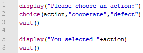
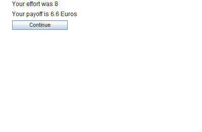

choice(varname,values)
The choice-command displays a group of several radio buttons. The user
can only select one option at a time. Initially no option is selected.
When the user selects a value it is stored in a variable with the specified name.
Some people requested the possibility to randomize the order of the values. This is now implemented. In order to do
this use the "choiceRandomize" instead of "choice".
Parameters
| varname | The name of the variable in which the result is stored. |
| values | A comma-separated list of strings or numbers. |
See also
Examples
Choosing between strings
|

|

|
Choosing between numbers

|


|